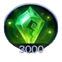

Are you ready to dominate the battlefield with style and grace? Meet Zetian, the Empress of Shendu, who combines devastating AoE magic with crowd control yet is one of the easiest mages to pick up and play! Whether you're new to Mobile Legends or looking for a powerful mid lane mage with high impact and low complexity, Zetian might be your new favorite hero.
In this guide, you'll uncover Zetian’s strengths, optimal builds, and strategies for each game phase. From farming efficiently to bursting enemies with flair, Zetian proves you don’t need complexity to be lethal. Let’s explore what makes this phoenix-born Empress soar.
Zetian Guide - Mobile Legends: Bang Bang, a game developed by Moonton.
Who Is Zetian?
Zetian is the legendary Empress of Shendu, a once-dormant phoenix spirit reborn to guard the Cadia Riverlands. With her divine origin and deep connection to ancient power, she controls the battlefield with elegance and overwhelming magical force.
Class: Mage
Position: Mid Lane
Main Stat: Magic Power
Zetian's rebirth granted her the power to command AoE magic and crowd-control effects that can change the outcome of team fights. She is ideal for players who enjoy dishing out high damage while helping control the pace of battle through precise positioning and skill usage.
Her gameplay revolves around wave-clear, poking enemies at range, and delivering high burst combos with ease. Although her durability is average, her ease of execution and ability to zone enemies make her incredibly user-friendly for beginners and a reliable pick in ranked matches.
How to Play with Zetian in Mobile Legends
Master Zetian with this beginner-friendly strategy guide. Learn how to dominate your lane and shine in teamfights with divine grace and power!
Early Game Strategy
In the early game, focus on farming safely in the Mid Lane. Zetian’s Phoenix Strike is your key to quickly clearing minion waves so upgrade it first. Always stay behind your minions and poke enemies with your Phoenix Waves to build pressure without taking damage. Avoid risky plays your goal is to build up gold and experience steadily.
Don’t forget: your Celestial Armament passive gives you a shield and knockback protection if enemies get too close. Use your turret as a safety net and roam to other lanes only after reaching level 4 and unlocking Fury of the Phoenix. That’s when you become a real threat!
Mid Game Strategy
Once you unlock all your skills, it’s time to roam and support other lanes. Use Phoenix Descent to zone enemies or start fights by reducing their magic defense. Always follow up with Phoenix Strike to deal big area damage.
In teamfights, Zetian shines best when she stays behind the frontline. Your Fury of the Phoenix can turn the tide of battle time it when multiple enemies are together to stun them all and reveal their positions. Communicate with your team before engaging to maximize impact.
Remember: even if you're not getting kills, you're contributing with slows, reveals, stuns, and damage reduction. Every action matters!
Late Game Strategy
By the late game, Zetian becomes a strong area control mage. Stick with your team and avoid venturing alone into the jungle or side lanes. One mistake could cost the game!
In full teamfights, position yourself at the backline and unleash your combo: Phoenix Descent ✠Phoenix Strike ✠Fury of the Phoenix. If timed right, you'll soften up the entire enemy team for your allies to clean up.
When pushing lanes, use Phoenix Strike to clear super minions quickly and support the final siege. Don't forget: your spell vamp can sustain you through fights, especially if your enemies can’t reach you.
🯠Tip: Never underestimate your vision skills. Fury of the Phoenix and Phoenix Descent can reveal hidden enemies, giving your team a huge strategic edge!
Zetian Skills Upgrade Priority - Mobile Legends: Bang Bang
New to Zetian? Here's a friendly skill upgrade guide to help you grow stronger and make better choices during every match.
Zetian - Celestial Armament: Mobile Legends
This passive skill works automatically. It gives Zetian a protective shield and knocks enemies back if they get too close. She also gains Spell Vamp when using her offensive skills.
Celestial Armament Skill, Mobile Legends: Bang Bang.
Zetian - Phoenix Strike: Mobile Legends
This is Zetian’s main damage skill. She sends up to three Phoenix Waves in a row. The third one is bigger and pulls enemies slightly. You can move and cast other skills while using it, which makes it really flexible and fun to use!
Evolution Priority:Very High – This skill should be maxed first. It deals the most consistent damage, helps with farming minions, and is great for poking enemies in fights.
Phoenix Strike Skill, Mobile Legends: Bang Bang.
Zetian - Phoenix Descent: Mobile Legends
This skill drops a Phoenix Spirit that slowly damages and weakens enemies in a large area. You can even send the spirit to charge a second time! It helps you control space, especially in tight team fights.
Evolution Priority:Medium-High – Upgrade this after Phoenix Strike. It’s excellent for reducing enemies’ magic defense and slowing them down, but it doesn’t hit as hard as Skill 1.
Phoenix Descent Skill, Mobile Legends: Bang Bang.
Zetian - Fury of the Phoenix: Mobile Legends
Zetian’s ultimate skill. She boosts your team’s speed and reveals all enemies. At the same time, she stuns and damages all enemy heroes. It’s great for starting team fights or turning them around.
Evolution Priority:High – Always upgrade this at levels 4, 8, and 12. It’s powerful for team coordination and controlling the battlefield.
Fury of the Phoenix Skill, Mobile Legends: Bang Bang.
Zetian Best Combos Mobile Legends
Discover Zetian’s strongest damage combos in Mobile Legends, perfect for dominating teamfights and controlling the Mid Lane with ease.
Teamfight Combos
Step 1: Fury of the Phoenix
Start the fight by using your Ultimate. It speeds up your whole team and hits all enemies with a powerful AoE blast that stuns them. This gives your allies the chance to engage while enemies are slowed and vulnerable.
Step 2: Phoenix Descent
Immediately after the Ultimate, summon the Phoenix Spirit using Skill 2 to slow down enemies and reduce their Magic Defense. This makes them easier targets for your teammates and increases your total damage output.
Step 3: Phoenix Strike
Cast Phoenix Strike while moving to stay safe and keep the pressure. This skill hits three times in a row and pulls enemies slightly on the final hit, making it harder for them to escape.
Step 4: Phoenix Descent (Recast)
If the enemies are trying to run away, use the recast of your second skill to send the Phoenix chasing after them. This applies another slow and deals extra damage, often securing the kill.
Laning Combos
Step 1: Phoenix Descent
Begin by placing the Phoenix Spirit near your lane opponent. This slows them down and reduces their Magic Defense, which means your next attacks will hurt more.
Step 2: Phoenix Strike
Follow up with Phoenix Strike. Cast it while repositioning this helps you stay mobile while delivering strong AoE damage. Try to hit the enemy with all three waves.
Step 3: Phoenix Descent (Recast)
If your enemy tries to leave the spirit’s area, recast it to dash the Phoenix onto them. This slows them again and deals one last hit of damage. Great for zoning or forcing them to retreat.
How to Counter Zetian in Mobile Legends
Discover the best heroes to shut down Zetian by exploiting her weaknesses in positioning, channeling, and mobility limitations.
Atlas
Atlas can dive straight into Zetian’s backline with Perfect Match and lock her down with Fatal Links, disrupting her casting and bypassing her knockback passive with crowd control immunity during combos.
Gusion can burst Zetian down before she reacts using his fast combo (Sword Spike + Incandescence). Her shields are not strong enough to withstand his high single-target burst.
Helcurt
Helcurt’s Dark Night Falls cancels Zetian’s map-wide vision during her ultimate. His silence also prevents her from casting any spells, making her extremely vulnerable in duels.
Joy
Joy is highly mobile and immune to crowd control during her ultimate combo. She can dash through Zetian’s abilities and deal consistent damage while avoiding stuns and slows.
Lancelot
Lancelot can dash through Zetian’s damage zones with Puncture and Thorned Rose, quickly eliminating her before she finishes casting. His mobility neutralizes her passive’s knockback effect.
Saber
Saber’s Triple Sweep can instantly eliminate Zetian before she can activate her shield or crowd control. His ability to isolate squishy backliners makes him a direct threat to her survival.
Valentina
Valentina can copy Zetian’s ultimate using I Am You, turning her strongest weapon against her own team. She also has strong mobility and poke damage to match Zetian’s lane presence.
Zetian Best Build Mobile Legends
Boost Zetian's AOE magic damage, cooldown efficiency, and survivability with the ideal build to dominate every stage of the game.
Arcane Boots
Arcane Boots: Boosts movement speed and grants Magic Penetration to help Zetian deal more damage early on.
Enchanted Talisman
Enchanted Talisman: Great early-game item for cooldown reduction and mana regeneration, letting Zetian cast more often without running dry.
Clock of Destiny
Clock of Destiny: Provides scaling HP and Magic Power over time, making Zetian tankier while increasing her burst potential as the game progresses.

Holy Crystal
Holy Crystal: Maximizes raw Magic Power and amplifies all of Zetian’s skill damage, especially effective in mid-to-late game fights.
Glowing Wand
Glowing Wand: Adds burn damage based on enemy HP, ideal for poking and damaging tanks or regenerating heroes over time.
Divine Glaive
Divine Glaive: Shreds enemy magic defense, essential against tanky lineups or enemies with magic resist items.
Zetian Pros and Cons - Mobile Legends: Bang Bang
✅ Pros
Excellent AOE magic damage with strong lane clearing power.
Passive skill provides knockback, stun, and a shield, offering natural defense against melee attackers.
High spell vamp potential, allowing sustain during extended fights.
Ultimate grants global crowd control and team-wide movement speed boost, ideal for teamfights.
Low skill difficulty makes her accessible to new players.
⌠Cons
Low mobility and no reliable escape skill make her vulnerable to assassins.
Ultimate has a long cooldown and can be countered or stolen (e.g., by Valentina).
Depends heavily on positioning and map awareness to avoid being caught out.
Shield and passive effects have cooldowns, leaving windows of vulnerability.
Requires good timing to maximize Phoenix Descent's second cast effectively.
Zetian Guide Conclusion
Zetian is a powerful and elegant mage who thrives when positioned wisely and played with patience. Her skill set allows her to control the battlefield with massive AOE damage, supportive team utility, and passive defenses that punish reckless enemies. Whether you're a new player or a seasoned strategist, Zetian offers a smooth learning curve and rewarding gameplay. Master her skill combos, manage her cooldowns wisely, and you’ll find yourself turning the tide of every battle with grace and fire. Embrace the Phoenix Empress and let your enemies burn in divine retribution!
Did you like our Zetian Guide for MLBB? Is there something you didn't understand or would like to suggest changes to? We invite you to join our comment section on the Alexandre Games Blog page. Feel free to express your opinion, clarify your doubts, and share your suggestions. Click the button below to get started:


 Julian Guide Mobile Legends
Julian Guide Mobile Legends
 Kalea Guide Mobile Legends
Kalea Guide Mobile Legends
 Lukas Guide Mobile Legends
Lukas Guide Mobile Legends